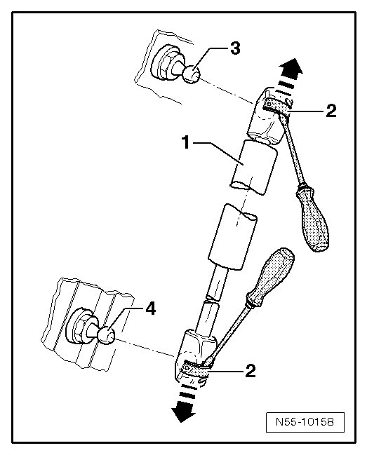

Removal and Replacement
Hood
Gas Strut
- Open and support the hood.

- Reach under spring clips - 2 - using a small screwdriver.
- Raise the spring clips- 2 - just far enough so they can slide over the ball socket in direction of the - arrow -.
- Remove gas-filled strut - 1 - from ball studs - 3 - and - 4 -.
After removing gas-filled strut - 1 -, immediately slide back spring clips - 2 - again.
CAUTION!
Proceed carefully when re-using gas-filled strut. Spring clips must not be pried completely out of ball socket, otherwise spring clips will be damaged. Gas-filled strut springs out of mount and leads to damage and injury to the operator.
- Tightening specifications: Ball pivot pin 20 Nm
- Releasing gas from gas-filled strut - 1 -. Refer to --> [ Gas Strut, Venting ] Hood Overview